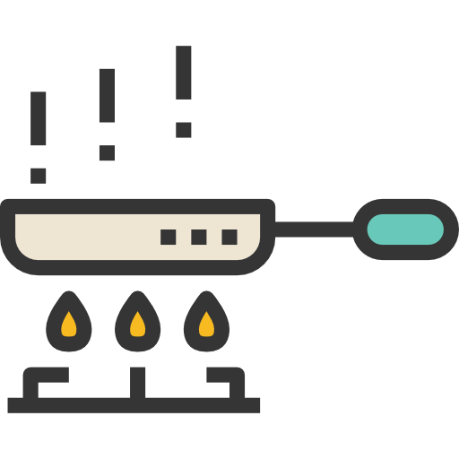

Carlo Cracco
CHEF. Milan Italy.
RICETTE
25
CONDIVISE
144
RIFATTE
55
Carlo Cracco è uno dei cuochi più famosi a livello internazionale, nel 2017 ha perso una delle due stelle Michelin sull'omonima guida 2018.
Ingredienti:
- Facile
- 6 persone
- Costo basso
- 25 minuti
Ingredienti:
- Spaghetti
- Pomodori
- Basilico
- Olio
- Cipolle
Preparazione:
1. Tagliare la verdura.
Tagliare le le verdure per fare il soffritto.

2. Fare il soffritto.
Tagliar egli ingredienti in modo fine.
3. Aggiungere i pomodori.
Dopo averli tagliati aggiungere i pomodori.
4. Mixare tutto insieme.
Unire il soffritto con il sugo.
5. Far cuocere tutto insieme.
Far amalgamare tutti gli ingredienti.
5. Impiattare.
Il piatto è pronto!
Condividi